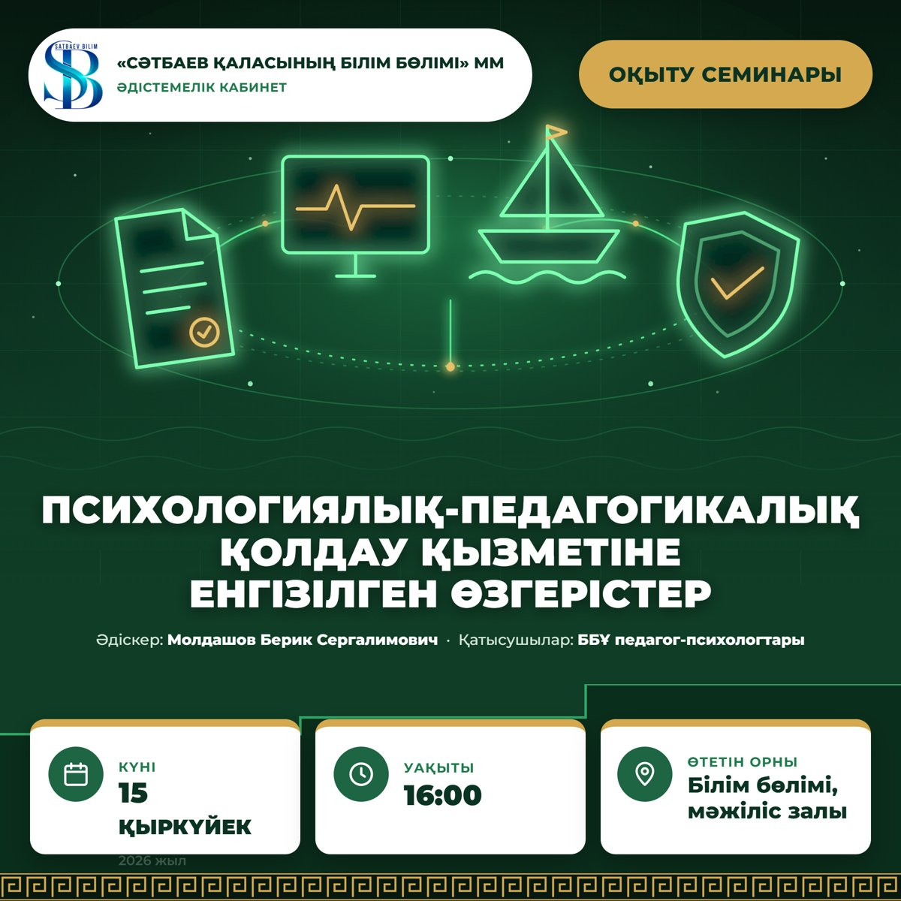
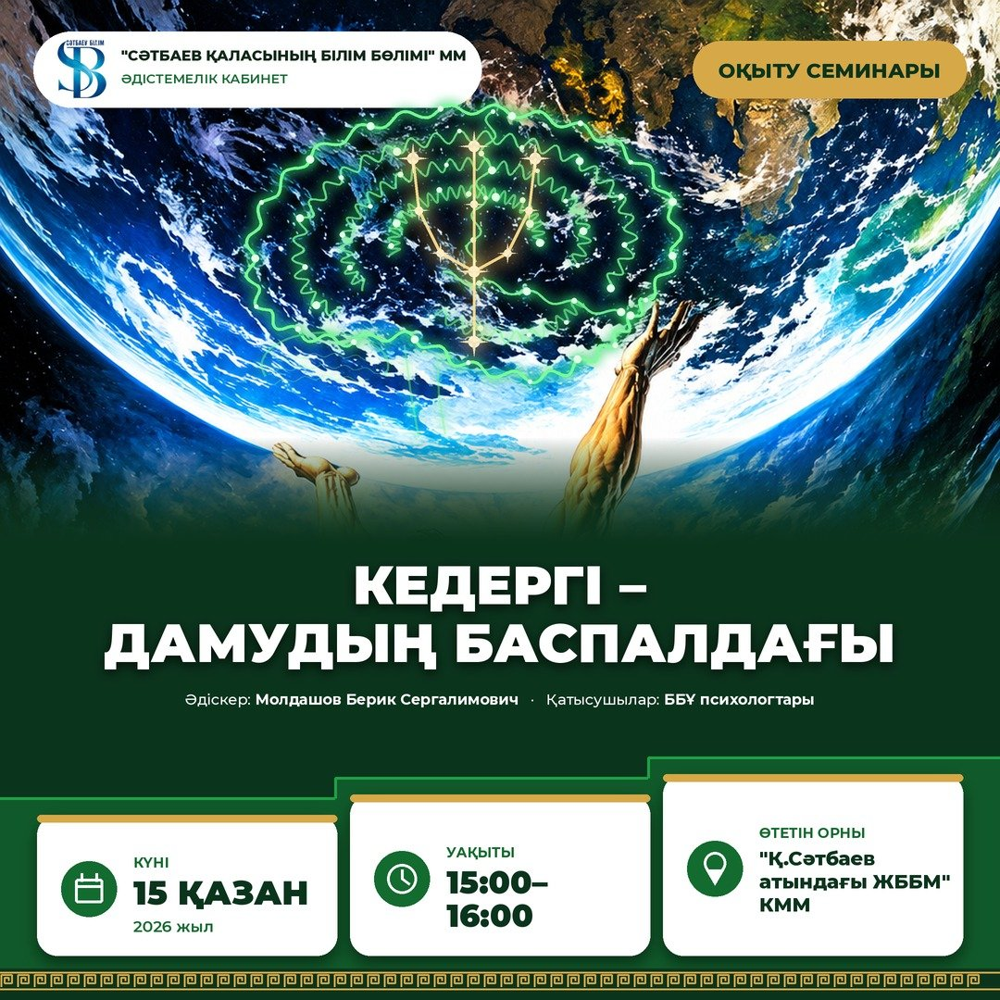

Айды таңдаңыз
Қыркүйек 15.09.2026 Психологиялық-педагогикалық қолдау қызметіне енгізілген өзгерістер Қазан 15.10.2026 Кедергі – дамудың баспалдағы: танымал идеялардың ғылыми негізіПсихологиялық-педагогикалық қолдау қызметіне енгізілген өзгерістер
Білім бөлімі, мәжіліс залы · Әдіскер Молдашов Берик Сергалимович · Қатысқаны: 14 педагог-психолог1Анонс

2Жарияланым
3Хаттама № 2
«Сәтбаев қаласы білім бөлімі» ММ
Білім беру ұйымдарының педагог-психологтарының әдістемелік отырысы
ХАТТАМАСЫ
Сәтбаев қаласы 15.09.2026 ж.
№ 2
Төрағалық етуші: Білім бөлімінің әдіскері Молдашов Б.С.
Қатысты: 14 педагог-психолог.
Тақырыбы: Білім беру ұйымдарындағы психологиялық-педагогикалық қолдау қызметіне енгізілген өзгерістер.
Өткізілген орны: «Сәтбаев қаласы білім бөлімі» ММ, мәжіліс залы.
КҮН ТӘРТІБІ:
1. №92 бұйрыққа «Білім беру ұйымдарындағы психологиялық-педагогикалық қолдау қызметінің жұмыс істеу қағидаларын бекіту туралы» енгізілген өзгерістер туралы.
2. «Mental Health NOBD» психологиялық автоматтандырылған жүйесі туралы.
3. Жеке қауіпсіздік курсын оқыту туралы.
4. Қалалық психологиялық жоба туралы.
ЖИНАЛЫС БАРЫСЫ:
1. №92 бұйрыққа «Білім беру ұйымдарындағы психологиялық-педагогикалық қолдау қызметінің жұмыс істеу қағидаларын бекіту туралы» енгізілген өзгерістер туралы
Баяндады: Молдашов Б.С., әдіскер.
Тыңдалды: №92 бұйрыққа енгізілген өзгерістер, олардың мектеп психологтарының жұмысына тигізетін әсері және орындалу мерзімдері жайлы ақпарат берілді. Бұйрық талаптарын әр мектепте басшылыққа алу қажеттігі атап өтілді.
ШЕШІМІ: Барлық мектеп психологтары №92 бұйрықтың жаңартылған нұсқасымен танысып, өз жұмыстарында басшылыққа алсын.
2. «Mental Health NOBD» психологиялық автоматтандырылған жүйесі туралы
Баяндады: Молдашов Б.С., әдіскер-психологы.
Тыңдалды: «Mental Health NOBD» автоматтандырылған жүйесінің мақсаты, оған мектеп психологтарының тіркелу және деректерді енгізу тәртібі түсіндірілді. Жүйенің оқушылардың психологиялық жағдайын мониторингілеуге және есептілікті цифрландыруға арналғаны айтылды. Жүйе 2026 жылдың қазан айынан жұмысын бастайды.
ШЕШІМІ: Мектеп психологтары «Mental Health NOBD» жүйесіне тіркеліп, деректерді уақтылы әрі дұрыс енгізуді қамтамасыз етсін. Жүйемен жұмыс барысында туындаған сұрақтар мен қиындықтар туралы білім бөлімінің әдіскеріне хабарлап отырсын.
3. Жеке қауіпсіздік курсын оқыту туралы
Баяндады: Молдашов Б.С., әдіскер.
Тыңдалды: Оқушылардың жеке қауіпсіздігі бойынша курсты ендіру қажеттілігі, оның мазмұны мен өткізу форматы (сынып сағаттары, тренингтер, ата-аналарға арналған семинарлар) қаралды.
ШЕШІМІ: Мектеп психологтары жеке қауіпсіздік курсын оқу жоспарына сәйкес сапалы ұйымдастырсын.
4. Қала мектеп психологтарына арналған қалалық психологиялық жоба туралы
Баяндады: Молдашов Б.С., әдіскер.
Тыңдалды: 2026–2029 жылдарға арналған қала мектеп психологтарының кәсіби дамуы мен супервизия жүйесін қалыптастыруға бағытталған қалалық психологиялық жобаның «Кәсіби кеме» атты тұжырымдамасы таныстырылды. Жобаның мақсаты - психологтардың біліктілігін арттыру, тәжірибе алмасу және сапалы психологиялық қолдау жүйесін орнату.
ШЕШІМІ: Ұсынылған жоба тұжырымдамасы 30 қыркүйекке дайындалсын. Мектеп психологтары жобаны іске асыруға белсенді атсалысып, өз ұсыныстарын білім бөлімінің әдіскеріне жіберсін.
Орындалу мерзімі: 30 қыркүйек 2026 ж.
Төраға Молдашов Б.С.
Хатшы Абишева А.Ә
4Семинар материалы
ПЕДАГОГ-ПСИХОЛОГТАРҒА АРНАЛҒАН ӘДІСТЕМЕЛІК ОТЫРЫС МАТЕРИАЛЫ
Әдістемелік отырыстың тақырыбы: «Білім беру ұйымдарындағы психологиялық-педагогикалық қолдау қызметіне енгізілген өзгерістер»
Өткізілген күні: 15.09.2026 ж. Қатысушылар: ББҰ педагог-психологтары.
Мақсаты: педагог-психологтарды психологиялық-педагогикалық қолдау қызметінің жаңартылған нормативтік талаптарымен, жаңа цифрлық диагностикалық платформамен, «Жеке қауіпсіздік» курсын өткізу тәртібімен және қалалық психологиялық жобамен таныстыру; оларды практикада дұрыс қолдануға әдістемелік бағыт беру.
Міндеттері:
№92 бұйрықпен бекітілген Қағидалардың жаңа редакциясының педагог-психолог жұмысына қатысты негізгі ережелерін түсіндіру.
«Mental Health NOBD» диагностикалық платформасының мақсаты мен жұмысты бастау тәртібін таныстыру.
«Жеке қауіпсіздік» курсын өткізудің мазмұны мен форматын айқындау.
«Кәсіби кеме» қалалық психологиялық жобасының тұжырымдамасын таныстырып, оны әзірлеуге педагог-психологтарды тарту.
1. Білім беру ұйымдарындағы психологиялық-педагогикалық қолдау қызметінің жұмыс істеу қағидалары (№92 бұйрық)
Нормативтік негіз: Қазақстан Республикасы Оқу-ағарту министрінің 2025 жылғы 29 сәуірдегі №92 бұйрығы «Білім беру ұйымдарындағы психологиялық-педагогикалық қолдау қызметінің жұмыс істеу қағидаларын бекіту туралы» (Әділет министрлігінде 2025 жылғы 30 сәуірде №36047 болып тіркелген). Қағидалар ҚР Оқу-ағарту министрінің 2026 жылғы 29 мамырдағы №144-НҚ бұйрығымен жаңа редакцияда жазылды.
Қағидалар «Білім туралы» Заңның 5-бабының 36) тармақшасына сәйкес әзірленген және білім беру ұйымдарындағы психологиялық-педагогикалық қолдау қызметінің (ППҚҚ) жұмыс істеу тәртібін айқындайды. ППҚҚ – білім алушылардың, оның ішінде ерекше білім беруді қажет ететін (ЕБҚЕ) балалардың психологиялық әл-ауқатын, дамуын, оқу мотивациясын, кәсіби бағдарын қалыптастыруды қамтамасыз етуге жауапты алқалы орган.
ППҚҚ құрамы және үйлестіру
ППҚҚ құрамын білім беру ұйымының басшысы бекітеді. Оған басшының орынбасарлары, педагог-психологтар, әлеуметтік педагогтер, арнайы педагогтер, педагог-ассистенттер, педагог-кәсіби бағдар берушілер (мектепке дейінгі ұйымда – әдіскер) кіреді. Қызметті әдіскер немесе басшының орынбасары үйлестіреді. Барлық пән мұғалімдері де өз лауазымдық міндеттеріне сәйкес психологиялық-педагогикалық қолдау процесіне қатысады (4-тармақ).
ППҚҚ мамандары қызметінің бес бағыты (8-тармақ)
Диагностикалық: білім алушылардың жеке ерекшеліктерін, әлеуетін және тәрбиелеу, оқу, даму, әлеуметтену қиындықтарының себептерін анықтау.
Консультативтік: білім беру процесіне қатысушыларға психологиялық проблемаларды шешуге жеке және топтық көмек, ата-аналарға тәрбие мен даму мәселелері бойынша кеңес беру.
Дамытушылық (түзету): жеке, кіші топтық, топтық жұмыс; ЕБҚЕ бағалау кезінде анықталған қиындықтарды еңсеру бойынша педагогтердің жұмысын ұйымдастыру.
Психологиялық-педагогикалық ағарту: сынып сағаттары, семинарлар, ата-аналар жиналыстары, педагогикалық кеңестер, интерактивті дәрістер.
Ұйымдастыру-әдістемелік: білім беру ортасына мониторинг жүргізу, қолдау нәтижелерін талдау, ұсынымдар әзірлеу, семинарлар мен тренингтер өткізу.
Педагог-психолог үшін маңызды талаптар
| Талап | Мазмұны | Тармақ |
|---|---|---|
| Ата-ананың жазбаша келісімі | Психологиялық диагностика, консультация және тренингтер (топтық, жеке) ата-ананың немесе заңды өкілдің жазбаша келісімімен өткізіледі. Келісім Қағидаларға қосымшадағы нысан бойынша ресімделеді. | 12 |
| Педагогтің хабарлауы | Оқу мен тәрбиедегі қиындықтар немесе мінез-құлықтық, эмоционалдық ерекшеліктер тоқсан бойы сақталса не күшейсе, педагог әдіскерді (басшының орынбасарын) жазбаша хабардар етеді. | 15, 1) |
| Терең зерттеу және алқалы талқылау | ППҚҚ мамандары жүйелі бақылау негізінде терең психологиялық-педагогикалық зерттеу жүргізеді, нәтижесін педагогтермен, сынып жетекшілерімен бірге алқалы түрде қарайды, ата-ананы хабардар етеді. | 15, 2) |
| Жеке бағдарлама (ППҚЖБ) | Психологиялық-педагогикалық қолдаудың жеке бағдарламасы жасалып, ата-анамен келісіледі және оқу жылының бір–үш тоқсаны ішінде іске асырылады. | 15, 2) |
| Тоқсан сайынғы бақылау | Тоқсан соңында қолдау сапасы бақыланады: оқу бағдарламасын меңгеру, әлеуметтік бейімделу дағдылары және эмоционалдық әл-ауқат. Келесі тоқсанның көлемі осы нәтижеге сай жоспарланады. | 15, 9)–10) |
| ПМПК-ға жолдау | Қиындықтар еңсерілмесе, ата-анаға ПМПК-дан консультация алу ұсынылады. | 15, 5) |
| ПҚО-ға жолдау | Аутодеструктивті мінез-құлық, зорлық-зомбылық, буллинг, дағдарыстық жағдайлар анықталса, ППҚҚ білім алушы мен ата-ананы Психологиялық қолдау орталығына (ПҚО) жібереді және оның ұсынымдарын ескеріп, сүйемелдеуді жалғастырады. | 23 |
| Сабақ ұзақтығы | Мектеп жасындағы балалармен кіші топтық және топтық сабақ – 45 минут, жеке сабақ – 30 минут. | 18 |
| Міндетті құжаттама | ППҚҚ мамандарының міндетті құжаттары ҚР Білім және ғылым министрінің 2020 жылғы 6 сәуірдегі №130 бұйрығымен айқындалады. ППҚҚ қызметі ұйымның жұмыс жоспарында көрініс табады. | 25 |
ППҚҚ қызметінің нәтижелілік көрсеткіштері (16-тармақ)
білім алушылардың оқу жетістіктері мен оқу мотивациясының динамикасы;
әлеуметтік бейімделу деңгейі;
білім беру ұйымының іс-шараларына қатысуы;
кәсіби бағдарлану нәтижелері;
жеке мүмкіндіктерін ескере отырып, оқу бағдарламасын меңгеру нәтижелері;
педагогтер мен ата-аналардың ППҚҚ мамандарының консультациялық қызметіне қанағаттану деңгейі (кері байланыс бойынша).
Нәтижелілік көрсеткіштері ППҚЖБ-да тіркеледі. Сүйемелдеуді ұйымдастыру мен оның нәтижелері үшін жауапкершілік ұйым басшысына, оның орынбасарларына және ППҚҚ мамандарына лауазымдық міндеттері шегінде жүктеледі.
2. «Mental Health NOBD» психологиялық автоматтандырылған жүйесі
«Mental Health NOBD» – оқушылардың психологиялық жағдайын диагностикалауға арналған жаңа цифрлық платформа. Ол мектеп психологтарының диагностикалық жұмысын біріздендіруге, оқушылардың психологиялық жағдайын мониторингілеуге және есептілікті цифрландыруға бағытталған. Жүйе 2026 жылдың қазан айынан бастап жұмыс істейді.
Педагог-психологтың міндеті: жүйеге уақтылы тіркелу, диагностика нәтижелерін дұрыс әрі толық енгізу, туындаған сұрақтар мен техникалық қиындықтар туралы білім бөлімінің әдіскеріне хабарлау.
3. «Жеке қауіпсіздік» курсы
Нормативтік негіз: Ы. Алтынсарин атындағы Ұлттық білім академиясының 2026–2027 оқу жылына арналған әдістемелік нұсқау хаты. Курс 5–9 және 10–11 сыныптар үшін міндетті курстар қатарына енгізілген.
Курстың мақсаты: оқушыларда қоғамдық және цифрлық ортада қауіпсіз мінез-құлық дағдыларын қалыптастыру.
Өткізу форматы: курсты педагог-психолог бейнематериалдарды пайдалана отырып, тренинг форматында жүргізеді. Курс мазмұны сынып сағаттарымен және ата-аналарға арналған семинарлармен толықтырылады.
Тренинг сабағының ұсынылатын құрылымы (45 минут)
Кіріспе және ереже (5 мин): топтық ережелерді еске салу, сабақтың тақырыбы мен мақсаты.
Бейнематериал (5–7 мин): тақырыпқа сай қысқа бейнеролик немесе жағдаят.
Талқылау (10 мин): «Не болды? Кейіпкер қандай қауіпті байқамады? Сен не істер едің?» деген сұрақтар.
Практикалық жаттығу (15 мин): рөлдік ойын, кейс шешу, «қауіпсіз жауап» алгоритмін құрастыру.
Қорытынды және рефлексия (5–8 мин): негізгі ережелерді бекіту, көмекке жүгінетін адамдар мен сенім телефондарын атау.
Ескерту: тренинг кезінде оқушының жеке басына қатысты қауіп белгілері анықталса, педагог-психолог Қағидалардың 23-тармағына сәйкес әрекет етеді (ПҚО-ға жолдау).
4. «Кәсіби кеме» қалалық психологиялық жобасы
Жоба 2026–2029 жылдарға арналған және қала мектептерінің педагог-психологтарының кәсіби дамуы мен супервизия жүйесін қалыптастыруға бағытталған.
Жобаның мақсаты: педагог-психологтардың біліктілігін арттыру, тәжірибе алмасу және сапалы психологиялық қолдау жүйесін орнату.
Жобаны әзірлеудегі негізгі бағыттар
Кәсіби даму: тақырыптық оқыту семинарлары мен әдістемелік отырыстар.
Супервизия: күрделі жағдайларды тәжірибелі әріптестермен бірге талдау.
Тәжірибе алмасу: қала мектептерінің психологтары арасындағы ашық сабақтар мен кейс талдау.
Кәсіби күйзелістің алдын алу: психологтардың өз ресурсын сақтауға бағытталған іс-шаралар.
Мерзім: жоба тұжырымдамасы 2026 жылғы 30 қыркүйекке дейін дайындалады. Педагог-психологтар жобаны іске асыруға қатысады және өз ұсыныстарын білім бөлімінің әдіскеріне жібереді.
5. Отырысқа қатысушыларға арналған практикумдар
1. «ППҚЖБ алгоритмі» кейс-стадиі
Шарт: 6-сынып оқушысының үлгерімі бір тоқсан бойы төмендеп, сабақта оқшаулана бастаған. Сынып жетекшісі бұл туралы ауызша ғана айтқан.
Тапсырма: Қағидалардың 15-тармағы бойынша іс-әрекет алгоритмін құрастыру: кім, қашан, кімді хабардар етеді; қандай зерттеу жүргізіледі; ППҚЖБ қалай жасалып, ата-анамен келісіледі; тоқсан соңында не бағаланады.
2. «ППҚҚ ма, ПҚО ма?» жаттығуы
Тапсырма: қатысушыларға бірнеше жағдаят беріледі (оқу мотивациясының төмендеуі, сыныптастармен жанжал, өзіне зақым келтіру белгілері, буллинг, бейімделу қиындығы). Олар әр жағдаятты мектептің ППҚҚ шеңберінде шешуге бола ма, әлде ПҚО-ға жолдау қажет пе, соны 23-тармаққа сүйеніп анықтайды.
3. «Жеке қауіпсіздік» тренингінің жоспары
Тапсырма: топтар бір тақырыпқа (мысалы, «Желідегі бейтаныс адам») ұсынылған құрылым бойынша 45 минуттық тренинг жоспарын құрып, таныстырады.
Таратпалы материалдар:
«ППҚҚ іс-әрекет алгоритмі» жадынамасы: педагогтің хабарлауынан тоқсан сайынғы бақылауға дейінгі қадамдар.
Ата-ана келісімінің нысаны: Қағидаларға қосымшадағы нысан.
«ПҚО-ға жолдау белгілері» чек-парағы: кешенді психологиялық көмекті қажет ететін жағдайлардың тізбесі.
«Жеке қауіпсіздік» тренингінің үлгі жоспары.
Пайдаланылған нормативтік құжаттар
ҚР Оқу-ағарту министрінің 2025 жылғы 29 сәуірдегі №92 бұйрығы «Білім беру ұйымдарындағы психологиялық-педагогикалық қолдау қызметінің жұмыс істеу қағидаларын бекіту туралы» (ҚР Оқу-ағарту министрінің 2026 жылғы 29 мамырдағы №144-НҚ бұйрығымен енгізілген жаңа редакция).
ҚР Оқу-ағарту министрінің м.а. 2025 жылғы 24 қарашадағы №264 бұйрығы «Психологиялық қолдау орталықтары қызметінің қағидаларын бекіту туралы».
ҚР Білім және ғылым министрінің 2020 жылғы 6 сәуірдегі №130 бұйрығы (педагогтер жүргізу үшін міндетті құжаттардың тізбесі мен нысандары).
ҚР Білім және ғылым министрінің 2022 жылғы 12 қаңтардағы №4 бұйрығы (ерекше білім беру қажеттіліктерін бағалау қағидалары).
Ы. Алтынсарин атындағы Ұлттық білім академиясы. 2026–2027 оқу жылында Қазақстан Республикасының орта білім беру ұйымдарында оқу процесін ұйымдастырудың ерекшеліктері туралы әдістемелік нұсқау хат.
Дайындаған: Б.Молдашов.
Телефон:+7-705-237-62-77
5Ұсынымдар
ҰСЫНЫМДАР
(2026 жылғы 15 қыркүйектегі №2 әдістемелік отырыстың қорытындысы бойынша)
1. Психологиялық-педагогикалық қолдау қызметінің жұмыс істеу қағидалары (№92 бұйрық, №144-НҚ редакциясы) бойынша
Қағидалардың жаңа редакциясын мектептің ППҚҚ мамандарымен оқып, қызметтің құрамын, функционалын және жылдық жұмыс жоспарын жаңартылған талаптарға сәйкестендіру.
Психологиялық-педагогикалық қолдау көрсету алдында ата-анадан (заңды өкілден) Қағидаларға қосымшадағы нысан бойынша жазбаша келісім алу; келісімдерді бөлек папкада сақтау.
Қиындықтар анықталған жағдайда ата-аналарды жазбаша хабардар ету, ата-ананың келісімімен жеке бағдарламаны (ППҚЖБ) әзірлеу және оның орындалуын тоқсан сайын талдау.
Әр тоқсан соңында қолдау сапасын бақылау: білім алушы динамикасын бағалау, қажет болса ППҚЖБ-ға түзету енгізу, нәтижесін ППҚҚ отырысында қарау.
Дағдарыстық жағдай, өзіне зиян келтіру белгілері, буллинг, ауыр күйзеліс анықталғанда 23-тармаққа сәйкес әрекет ету: ата-анаға хабарлау және Психологиялық қолдау орталығына (ПҚО, №264 бұйрық) жолдау; жағдайды құжатта тіркеу.
Құжаттаманы ҚР БҒМ 2020 жылғы 6 қаңтардағы №130 бұйрығына сәйкес жүргізу; құпиялылық талабын қатаң сақтау.
Жылдың соңында қызметтің нәтижелілік көрсеткіштерін (16-тармақ) талдап, есепке енгізу.
2. «Mental Health NOBD» диагностикалық платформасы бойынша
Платформада белгіленген мерзімде тіркеліп, оқушылардың психологиялық жағдайын анықтайтын диагностика нәтижелерін уақытылы және толық енгізу.
Диагностика нәтижелерін түзете-дамыту жұмысын жоспарлау мен ППҚЖБ әзірлеуде пайдалану.
Платформамен жұмыс барысында туындаған техникалық қиындықтар мен сұрақтарды білім бөлімінің әдіскеріне дереу хабарлау.
3. «Жеке қауіпсіздік» курсы бойынша
5–9 және 10–11-сынып оқушыларына курсты 2026–2027 оқу жылына арналған әдістемелік нұсқау хатқа сәйкес тренинг форматында, бейнематериалдарды пайдалана отырып өткізу.
Тренингті ұсынылған құрылым бойынша (45 минут) жоспарлау: кіріспе, бейнематериал, талқылау, практикалық жаттығу, рефлексия.
Курс тақырыптары бойынша ата-аналарға арналған семинарлар мен кеңестер ұйымдастыру.
Тренинг барысында оқушының басына қатысты қауіп белгілері байқалса, 23-тармаққа сәйкес әрекет ету (ПҚО-ға жолдау).
4. «Кәсіби кеме» қалалық психологиялық жобасы бойынша
Жоба тұжырымдамасын әзірлеуге белсене қатысу; ұсыныстарды 2026 жылғы 30 қыркүйекке дейін білім бөлімінің әдіскеріне жіберу.
Жоба аясындағы оқыту семинарларына, супервизия мен тәжірибе алмасу іс-шараларына қатысу.
Орындалу мерзімі: тұрақты.
Кедергі – дамудың баспалдағы: танымал идеялардың ғылыми негізі
«Қ.Сәтбаев атындағы ЖББМ» КММ · Әдіскер Молдашов Берик Сергалимович · Қатысқаны: 10 педагог-психолог1Анонс

2Жарияланым
3Хаттама № 3
«Сәтбаев қаласы білім бөлімі» ММ
Білім беру ұйымдарының педагог-психологтарына арналған оқыту семинарының
ХАТТАМАСЫ
Сәтбаев қаласы 15.10.2026 ж.
№ 3
Төрағалық етуші: Білім бөлімінің әдіскері Молдашов Б.С.
Қатысты: 10 педагог-психолог.
Тақырыбы: «Кедергі – дамудың баспалдағы: танымал идеялардың ғылыми негізі».
Өткізілген орны: "Қ.Сәтбаев атындағы ЖББМ" КММ, 15:00–16:00.
КҮН ТӘРТІБІ:
1. Нақты өзін-өзі дамыту: «кедергі – дағды – ресурс» баспалдағының ғылыми негізі.
2. «Мәселелер айналасындағы өмір»: тұлғаның мәселеге толы әңгімесі және одан шығу жолдары.
3. Себеп-салдар байланысын көрмеу: отбасы мен мектеп арасындағы «кінә іздеу шеңбері».
4. Тұлғалық жауапкершілік қағидасы және оны психологтің тәжірибесінде қолдану.
5. Семинар қорытындысы.
СЕМИНАР БАРЫСЫ:
1. Нақты өзін-өзі дамыту: «кедергі – дағды – ресурс» баспалдағының ғылыми негізі
Баяндады: Молдашов Б.С., әдіскер.
Тыңдалды: Нақты даму ақпарат жинаудан емес, адамның шамасына сай кедергіні жеңуден басталатыны түсіндірілді. «Кедергі – күш салу – дағды – ресурс» баспалдағы ғылыми теориялармен негізделді: Л.С. Выготскийдің жақын даму аймағы, А. Бандураның өзіндік тиімділік теориясы, С. Хобфоллдың ресурстарды сақтау теориясы, М. Сири мен әріптестерінің (2010) орташа қиындықтар туралы зерттеуі. Кедергі дамуға айналуы үшін үш шарт қажет екені атап өтілді: тапсырманың шамаға сай болуы, ересектің қолдауы және тәжірибені саналы түрде талдау. Қолдаусыз ұзаққа созылған стресс («улы стресс», Дж. Шонкофф) дамуды тежейтіні ескертілді.
ШЕШІМІ: Педагог-психологтар оқушылармен жұмыста тапсырманың шамаға сай болуын және ересектің қолдауын қамтамасыз ететін тәсілдерді басшылыққа алсын.
2. «Мәселелер айналасындағы өмір»: тұлғаның мәселеге толы әңгімесі және одан шығу жолдары
Баяндады: Молдашов Б.С., әдіскер.
Тыңдалды: Кейбір адамдардың өмірі бір мәселеден екіншісіне ауысумен өтетіні, тұлғаның «жетіспеушілік» айналасында қалыптасатыны қарастырылды. М. Уайт пен Д. Эпстонның «мәселеге толы әңгіме» ұғымы таныстырылды. «Ертең барлық мәселелеріңіз жоғалса, таңертең немен айналысасыз?» деген ойша эксперимент өткізілді. «Мәселе – менің бір бөлігім» көзқарасынан «кедергі – шешуге болатын міндет» көзқарасына көшу тәсілдері талданды.
ШЕШІМІ: Педагог-психологтар кеңес беру барысында мәселені тұлғадан бөліп қарастыру тәсілін және тұлғаның күшті жақтарына сүйенуді қолдансын.
3. Себеп-салдар байланысын көрмеу: отбасы мен мектеп арасындағы «кінә іздеу шеңбері»
Баяндады: Молдашов Б.С., әдіскер.
Тыңдалды: Ересектердің көбіне салдарға (нашар баға, агрессия, телефонға тәуелділік, емтихан алдындағы қорқыныш) әрекет етіп, оған әкелген себептер тізбегін көрмейтіні түсіндірілді. «Оқушы нашар оқиды» кейсі бойынша мұғалім мен ата-ана арасындағы өзара кінәлау шеңбері және С. Карпманның драмалық үшбұрышы талданды. Шешім «тізбек алғаш қай жерде үзілді?» деген сұрақтан басталатыны атап өтілді.
ШЕШІМІ: Отбасы мен мектеп арасындағы келіспеушіліктерде педагог-психологтар «кім кінәлі?» деген сұрақтың орнына «бұған не әкелді?» және әрқайсымыз «мен не істей аламын?» деген сұраққа негізделген талдау жүргізсін.
4. Тұлғалық жауапкершілік қағидасы және оны психологтың тәжірибесінде қолдану
Баяндады: Молдашов Б.С., әдіскер.
Тыңдалды: Тұлғалық жауапкершіліктің кінәдан айырмашылығы және оның үш аспектісі қарастырылды: реакция жасаудың орнына әрекет ету (Ю. Куль), өз ықпалы жететін нәрсеге назар аудару (Дж. Брем, реактанс), «ол нені дұрыс істемеді?» емес, «мен нені жақсырақ істей алар едім?» деген сұрақ қою (Д. Миллер, М. Росс).
ШЕШІМІ: Ата-ана, мұғалім және оқушы қатысатын кездесулерде осы тұжырымдамалар қолданылсын.
5. Семинар қорытындысы
Баяндады: Молдашов Б.С., әдіскер.
Тыңдалды: Семинар жоспарға сай өтті. Тақырып нақты әрі түсінікті баяндалып, ғылыми дереккөздер мен практикалық мысалдармен бекітілді. Қатысушы педагог-психологтар өз жұмыстарында қолдануға болатын практикалық тәсілдерді алды. Семинар материалдары мен ғылыми әдебиеттер тізімі қатысушыларға ұсынылды.
ШЕШІМІ: Семинар материалдары ББҰ педагог-психологтарына таратылсын, ұсынылған тәсілдер мектептердің жұмыс тәжірибесіне енгізілсін.
Орындалу мерзімі: тұрақты
Төраға Молдашов Б.С.
Хатшы Смагулова Э.Г
4Семинар материалы
Оқыту семинарының тақырыбы: «Кедергі – дамудың баспалдағы: танымал идеялардың ғылыми негізі»
Мақсаты: педагог-психологтардың кәсіби құзыреттілігін арттыру; кедергінің адам дамуына әсерін ғылыми тұрғыда түсіндіру; кеңінен тараған психологиялық идеялардың ғылыми негізін талдау және кедергіні оқушының дамуына айналдыруға арналған тиімді әдіс-тәсілдерді меңгерту.
Міндеттері:
Кедергінің даму баспалдағына айналу механизмін («кедергі – күш салу – дағды – ресурс») ғылыми теориялар негізінде түсіндіру.
Тұлғаның «мәселелер айналасында» өмір сүру құбылысын және одан шығу жолдарын талдау.
Отбасы мен мектеп арасындағы «кінә іздеу шеңберін» және себеп-салдар байланысын көре білу дағдысын қалыптастыру.
Тұлғалық жауапкершілік қағидасын және отбасы мен мектепке арналған бес қадамдық алгоритмді практикада қолдануға үйрету.
Өзектілігі
Қазіргі қоғамда «қиындық адамды шыңдайды», «бәрі сенің қолыңда», «стресс – зиян» сияқты танымал идеялар кеңінен тараған. Олар әлеуметтік желілерде, тренингтерде, ата-аналар мен мұғалімдердің сөзінде жиі айтылады. Алайда бұл тұжырымдардың бір бөлігі ғана ғылыми тұрғыда расталған, ал кейбірі оқушыға пайдадан гөрі зиян келтіруі мүмкін. Педагог-психолог танымал идеяны ғылыми дерекпен ажырата білуі және оқушыға, ата-анаға, мұғалімге нақты, дәлелді ұсыныс беруі тиіс.
Семинардың негізгі тезисі: нақты өзін-өзі дамыту адамда кедергілер пайда болған сәттен басталады. Сол кедергілерді жеңу барысында ол дағдыларды игереді, ал дағдылар арқылы жаңа ресурстар жинайды. Бұл тізбек кедергі адамның шамасына сай болып, оған қолдау көрсетілгенде ғана жұмыс істейді.
Блок 1: Нақты өзін-өзі дамыту: кедергі – дағды – ресурс
Басты ұстаным: даму ақпарат жинаудан емес, кедергіні өз күшімен жеңуден басталады. Білу мен дамудың арасында айырмашылық бар: «Мен басқалардың қалай істейтінін білемін» – бұл хабардар болу; «Мен мұны өзім істей аламын» – бұл даму.
Даму баспалдағы және оның ғылыми негізі:
Кедергі. Тапсырма адамның қазіргі деңгейінен сәл жоғары болуы керек. Л.С. Выготскийдің «жақын даму аймағы»: бала ересектің көмегімен орындай алатын, бірақ әлі өз бетімен орындай алмайтын тапсырма арқылы дамиды.
Күш салу. Сынау, қателесу, өз тәсілін іздеу. М. Сири, Э. Холман, Р. Сильвер (2010) зерттеуі: өмірінде орташа мөлшерде қиындық көрген адамдар қиындықты мүлде көрмегендерге де, тым көп көргендерге де қарағанда психикалық тұрғыда тұрақтырақ болған.
Дағды. «Мен өзім жеңдім» деген тәжірибе. А. Бандураның өзіндік тиімділік (self-efficacy) теориясы: өзіне сенімнің ең күшті көзі – кедергіні өз күшімен жеңу тәжірибесі, ал ең әлсіз көзі – сөзбен сендіру.
Ресурс. Сенімділік, біліктілік, байланыстар, энергия. С. Хобфоллдың ресурстарды сақтау теориясы (1989): ресурс кедергіні жеңуге жұмсалып, қайта көбейеді. Жаңа ресурс бұдан да үлкен кедергіні алуға мүмкіндік береді – бұл «ресурстық спираль».
Кедергі қашан дамытады? Үш шарт:
Шамаға сай. Қиын, бірақ орындауға болатын тапсырма. Тым жеңіл тапсырма дамытпайды, тым ауыр тапсырма сындырады.
Қолдау. Жанында баланың орнына шешпейтін, бірақ оны жалғыз да қалдырмайтын ересек бар.
Саналы талдау. «Мен нені жеңдім, неге үйрендім?» деген сұраққа жауап беру. Әйтпесе тәжірибе ізсіз өтеді.
Ескерту: бұл шарттар орындалмаса, қиындық «улы стрессқа» айналады (Дж. Шонкофф, Гарвард университеті): ересектің қолдауынсыз ұзаққа созылған стресс баланың дамуын бұзады. Сондықтан «қиындық шыңдайды» деген танымал идея тек қолдаумен бірге ғана ақиқат.
Блок 2: «Мәселелер айналасындағы өмір»
Құбылыстың мәні: кейбір адамдардың өмірі бір мәселеден екіншісіне ауысумен өтеді, мұны олар «өмір ағымы» деп атайды. Психолог кеңес беру кезінде мұны «Маған жетпейді…», «Маған жаман…», «Мен істей алмаймын…», «Мен лайық емеспін…» деген сөздерден аңғарады. Тұлға «жетіспеушілік» айналасында қалыптасады.
Ғылыми негізі: М. Уайт пен Д. Эпстонның нарративтік терапиясында бұл «мәселеге толы әңгіме» (problem-saturated story) деп аталады: адам өзі туралы тек мәселелер арқылы айтады және бұл әңгіме оның мінез-құлқын анықтай бастайды. Негізгі қағида: «Адам – мәселе емес. Мәселе – мәселе».
Көзқарасты өзгерту: мәселе «мен» ретінде немесе кедергі міндет ретінде
| Мәселе – «менің бір бөлігім» | Кедергі – шешуге болатын міндет | |
|---|---|---|
| Сөйлеу | «Мен сондаймын, менде әрқашан солай» | «Алдымда міндет тұр, оны шешуге болады» |
| Назар | Менде не дұрыс емес | Маған қандай дағды керек |
| Уақыт | Өткен шақ және шағым | Келесі қадам |
| Нәтиже | Ескі мәселенің орнына жаңа мәселе | Жаңа дағды мен ресурс |
Блок 3: Себеп-салдар байланысын көрмеу
Басты ұстаным: ересектер көбіне соңғы буынға – екі деген бағаға, айқайға, кешігуге – әрекет етеді, ал оған әкелген тізбек көрінбей қалады. Байланысты көру – «кім кінәлі?» емес, «бұған не әкелді?» деп сұрау.
Кейс: «Оқушы нашар оқиды» – кінә іздеу шеңбері
Мұғалім: «Ата-анасы баламен айналыспайды».
Ата-ана: «Мектеп нашар оқытады».
Өзара кінәлау және ұрыс.
Бағалар одан әрі төмендейді – шеңбер қайта басталады. Нәтижесінде бала көмексіз қалады.
С. Карпманның драмалық үшбұрышы (1968): Қуғыншы, Құрбан, Құтқарушы. Мұғалім ата-анасын, ата-ана мектепті кінәлайды, екеуі де өзін құрбан сезінеді. Рөлдер ауысады, бірақ шеңбер сақталады: әркім басқаның не істеуі керегін айтады, ешкім өзі не істейтінін айтпайды.
Үзілген буын (тізбекті кері қарай қадағалау):
Тақырыпты түсінгенін ешкім тексермейді → базалық білімде олқылық пайда болады → жаңа тақырыптар меңгерілмейді → қызығушылық төмендеп, бала оқудан қашады → екі деген баға мен жанжал. Барлығы соңғы буынға әрекет етеді, ал шешім «тізбек алғаш қай жерде үзілді?» деген сұрақтан басталады.
Симптомға реакция: тағы мысалдар
| Жағдай | Ересектер не көреді және қалай әрекет етеді | Көрінбей қалатын байланыс |
|---|---|---|
| Сыныптағы агрессия | Ескерту, ата-ананы шақыру, жаза | Үйдегі шиеленіс, балаға назар жетіспейді |
| Жасөспірім телефоннан шықпайды | Тыйым салу және ұрыс | Өмірінде табысты болатын ісі жоқ, телефон бос орынды толтырады |
| Емтихан алдындағы қорқыныш | «Жиналып ал, сен тапсыруға міндеттісің!» | Қысым → мазасыздық → қате → жаңа қысым |
Блок 4: Тұлғалық жауапкершілік қағидасы
Басты ұстаным: «Шындыққа реакция жасауды тоқтатып, оны басқаруды бастау». Жауапкершілік – кінә емес: мен таңдамаған нәрсеге (тұқым қуалаушылық, балалық шақ, жағдай) жауап бермеймін, бірақ оған қалай әрекет ететініме және әрі қарай не істейтініме жауап беремін.
| Кінә | Жауапкершілік | |
|---|---|---|
| Сұрақ | «Кім кінәлі?» | «Мен не істей аламын?» |
| Көзқарас | Артқа, өткенге | Алға, келесі қадамға |
| Сезім | Ұят, дәрменсіздік | Күш, бақылау |
| Нәтиже | Кінәліні іздеу | Әрекет жоспары |
Жауапкершіліктің үш аспектісі:
Реакция жасаудың орнына әрекет ету. Ю. Куль: әрекетке бағдарланған адамдар сәтсіздіктен кейін тапсырмаға тез оралады, ал күйге бағдарланғандар уайымда тұрып қалады. Балаға: қате – драма емес, келесі әрекет үшін ақпарат.
Өз ықпалым жететін нәрсеге назар аудару. Дж. Брем (1966), реактанс: адамға қысым жасалғанда, ол таңдау еркіндігін сақтау үшін қарсыласады. Сондықтан жасөспірімге нотация оқу әдетте керісінше нәтиже береді.
«Ол нені дұрыс істемеді?» емес, «мен нені жақсырақ істей алар едім?». Д. Миллер мен М. Росс (1975), өзін-өзі ақтау әсері: ми өз қатесін мойындаудың орнына кінәні сыртқа аударуға бейім.
Әр тараптың үлесі:
Ата-ана: күн сайын оқуына қызығады, күн тәртібін ұстайды, мұғаліммен байланыста болады.
Мұғалім: олқылықты табады, шамаға сай тапсырма береді, жетістік туралы хабарлайды.
Оқушы: шамасына сай тапсырманы орындап, нәтижесін көреді: «мен өзім жеңдім».
Педагог-психолог: кездесуді ұйымдастырады, алгоритмді ұстайды, өзара айыптауды бәсеңдетеді.
Әр тарап өз үлесіне жауапкершілік алғанда, кінә іздеу шеңбері ресурс спиралына айналады: кедергі → дағды → ресурс. Отбасы мен мектептің серіктестік моделі Дж. Эпстайн еңбектерінде толық сипатталған.
Блок 5. Семинарға қатысушыларға арналған практикумдар мен жаттығулар
1. «Ойша эксперимент» жаттығуы
Шарт: қатысушыларға сұрақ қойылады: «Егер ертең барлық мәселелеріңіз жоғалса, таңертең немен айналысасыз?». Ойлануға 20–30 секунд беріледі, жауапты жазып алуға болады.
Талдау: жауап таба алмау мәселелердің тұлғаның тірегіне айналғанын көрсетеді. Бұл – нақты жұмыс басталатын «нөлдік нүкте». Жауап берудің орнына тұлғаны күшті жақтар, қызығушылықтар мен мақсаттар айналасында құру ұсынылады.
2. «Кейс-стади: үзілген буын» жаттығуы
Шарт: топтарға нақты жағдай беріледі (мысалы: 7-сынып оқушысы соңғы айда сабаққа кешігіп, үй тапсырмасын орындамайды; ата-ана мен сынып жетекшісі бір-бірін кінәлайды).
Тапсырма: себеп-салдар тізбегін кері қарай қалпына келтіріп, үзілген буынды табу және бес қадамдық алгоритм бойынша ата-ана, мұғалім, оқушы мен психологтың нақты әрекет жоспарын құрастыру.
3. «Мәселеден міндетке» практикумы
Тапсырма: қатысушыларға кеңес беру кезінде жиі естілетін шағым-сөйлемдер беріледі: «Менің балам ештеңеге қызықпайды», «Мен математиканы ешқашан түсінбеймін», «Бұл сыныппен жұмыс істеу мүмкін емес». Олар әр сөйлемді шешуге болатын міндетке айналдырып, бірінші шамаға сай қадамды анықтауы тиіс.
Блок 6. «Менің баспалдағым» рефлексиясы
Тапсырма: әр қатысушы өз өмірінен бір кедергіні еске алып, оны баспалдақ бойынша талдайды: кедергі қандай болды, қандай күш салдым, қандай дағды игердім, қазір ол қандай ресурсқа айналды. Соңында «Бұл тәсілді оқушыммен қалай қолданамын?» деген сұраққа жауап береді.
Таратпалы материалдар:
«Даму баспалдағы» жадынамасы: кедергі – күш салу – дағды – ресурс сатылары және кедергі дамытуы үшін қажетті үш шарт.
«Бес қадамдық алгоритм» карточкасы: ата-ана, мұғалім және оқушы қатысатын кездесуді өткізу тәртібі.
«Мәселеден міндетке» жұмыс парағы: шағымды міндетке айналдыруға және бірінші қадамды жоспарлауға арналған кесте.
«Психологтың 10 сұрағы» жадынамасы: «Бұған не әкелді?», «Тізбек қай жерде үзілді?», «Сенің ықпалың жететін не бар?», «Мен нені жақсырақ істей аламын?» және т.б.
Кедергі дамуды тежейтін жағдайлар және оларды даму баспалдағына айналдыру жолдары
| Кедергі түрі | Мән-жайы | Жою жолдары мен әдістемелік шешімдер |
|---|---|---|
| Шамадан тыс кедергі («улы стресс») | Тапсырма немесе жағдай баланың мүмкіндігінен әлдеқайда жоғары, қолдау жоқ. Нәтижесінде дәрменсіздік пен қашу пайда болады. | • Тапсырманы шағын қадамдарға бөлу. • Ересектің тұрақты қолдауын ұйымдастыру. • Стресс белгілерін уақтылы анықтау. |
| Тым жеңіл тапсырма | Бала өз деңгейінен төмен тапсырма орындайды, күш салмайды, дағды игерілмейді. | • Жақын даму аймағын анықтау. • Тапсырманы біртіндеп күрделендіру. |
| Гиперопека (артық көмек) | Ересек баланың орнына шешеді. Бала «мен өзім жеңдім» тәжірибесін алмайды, тәуелді болады. | • Көмекті біртіндеп азайту (скаффолдинг). • Баланың өзі шешетін кіші міндеттер беру. |
| Мәселеге толы әңгіме | Адам өзін тек мәселелер арқылы сипаттайды, мәселе тұлғаның бір бөлігіне айналады. | • Мәселені тұлғадан бөлу (экстернализация). • Табыс жағдайларын іздеу, күшті жақтарға сүйену. |
| Кінә іздеу шеңбері | Мұғалім мен ата-ана бір-бірін кінәлайды, бала көмексіз қалады. | • Бес қадамдық алгоритм бойынша кездесу. • «Кім кінәлі?» орнына «Бұған не әкелді?» деген сұрақ. |
| Нотация және қысым (реактанс) | Ересек сөзбен қысым жасайды, жасөспірім еркіндігін сақтау үшін қарсыласады. | • Нотацияның орнына бірлескен әрекет. • Таңдау мүмкіндігін беру. |
Педагог-психологтың жұмысындағы тиімді әдістер мен тәсілдер
А. Жақын даму аймағымен жұмыс әдістері
Скаффолдинг (бағыттаушы қолдау): ересек алдымен көп көмектеседі, бала дербестене түскен сайын көмекті біртіндеп азайтады (Д. Вуд, Дж. Брунер, Г. Росс, 1976).
«Кіші жеңістер» тәсілі: баланың орындай алатын шағын қадамдарын жоспарлап, әр жеңісті бірге атап өту. Бұл өзіндік тиімділікті нығайтады.
Тәжірибені саналы талдау: әр кезеңнен кейін «Мен нені жеңдім? Неге үйрендім? Келесі жолы не істеймін?» деген сұрақтар.
Б. Нарративтік әдістер
Мәселені тұлғадан бөлу (экстернализация): «Сен ашушаңсың» емес, «Ашу сені қашан жеңеді, ал сен оны қашан жеңесің?».
Ерекше жағдайларды іздеу: мәселе болмаған немесе бала оны жеңген сәттерді тауып, солардың айналасында жаңа әңгіме құру.
В. Жауапкершілікті дамыту әдістері
«Ықпал шеңбері» жаттығуы: парақта екі шеңбер сызылады: менің ықпалым жететін және жетпейтін нәрселер. Назар ішкі шеңберге аударылады.
«Мен нені жақсырақ істей аламын?» сұрағы: сәтсіздіктен кейін кінәліні іздеудің орнына өз үлесін талдау.
Қатені ақпарат ретінде қабылдау: қатені драма емес, келесі әрекетке арналған дерек ретінде талдау (Ю. Куль).
Пайдаланылған әдебиеттер
Выготский Л.С. Мышление и речь. – М., 1934.
Bandura A. Self-efficacy: Toward a unifying theory of behavioral change // Psychological Review. – 1977. – 84(2).
Hobfoll S.E. Conservation of resources: A new attempt at conceptualizing stress // American Psychologist. – 1989. – 44(3).
Seery M.D., Holman E.A., Silver R.C. Whatever does not kill us // Journal of Personality and Social Psychology. – 2010. – 99(6).
Shonkoff J.P. и др. The lifelong effects of early childhood adversity and toxic stress // Pediatrics. – 2012. – 129(1).
White M., Epston D. Narrative Means to Therapeutic Ends. – New York, 1990.
Karpman S. Fairy tales and script drama analysis // Transactional Analysis Bulletin. – 1968. – 7(26).
Kuhl J. Action versus state orientation // Volition and Personality. – Hogrefe, 1994.
Brehm J.W. A Theory of Psychological Reactance. – Academic Press, 1966.
Miller D.T., Ross M. Self-serving biases in the attribution of causality // Psychological Bulletin. – 1975. – 82(2).
Wood D., Bruner J., Ross G. The role of tutoring in problem solving // Journal of Child Psychology and Psychiatry. – 1976. – 17(2).
Epstein J.L. School, Family, and Community Partnerships. – Corwin Press, 2018.
Дайындаған: Б.Молдашов
Телефон +7-705-237-62-77
5Ұсынымдар
«Кедергі – дамудың баспалдағы»
Ұсынымдар
1. Кеңес беру барысында оқушының «мен өзім жеңдім» деген табыс тәжірибесін мақсатты түрде қалыптастыру және оны оқушымен бірге талдау.
2. Мәселеге толы әңгімемен жүгінген оқушылар мен ата-аналармен жұмыста нарративтік тәсілдерді қолдану: мәселені тұлғадан бөлу, ресурстар мен күшті жақтарға сүйену.
3. Ата-ана мен мұғалім арасындағы даулы жағдайларда нақты шешу жолдары арқылы бірлескен кездесулер ұйымдастырып, нәтижесін бақылау.
4. Ата-аналар жиналыстарында «кінә емес, жауапкершілік» тақырыбын түсіндіру, жасөспірімдерге көп нотациялар оқуға деген қарсылық тудыратынын ескерту.
5. Оқушылардағы ұзаққа созылған стресс белгілерін уақтылы анықтап, оларды қолдаусыз қалдырмау.
6. Семинарда ұсынылған ғылыми әдебиеттермен танысып, кәсіби дамуда пайдалану.